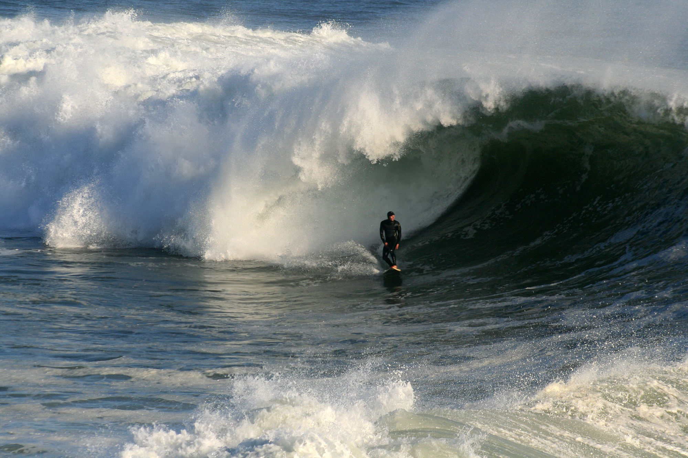

Pictures
Favorite General Conference Talk: Elder Uchtdorf - If your heart is in a rush, remind yourself that beautiful things take time.
What kind of photos are good to encode using JPEG?
-It's good for natural or real photos and can handle all kinds of complex images.
What kind of photos are good to encode using GIF?
-It's good for simple low images or color. It's also better for animation.
How do you resize your photo to the size it should be displayed?
-How do you resize your photo to the size it should be displayed?
-There are many online tools that is available for use like adobe express, imageresizer and maintaining the aspect ratio at the same time, choosing the right format for the images.
